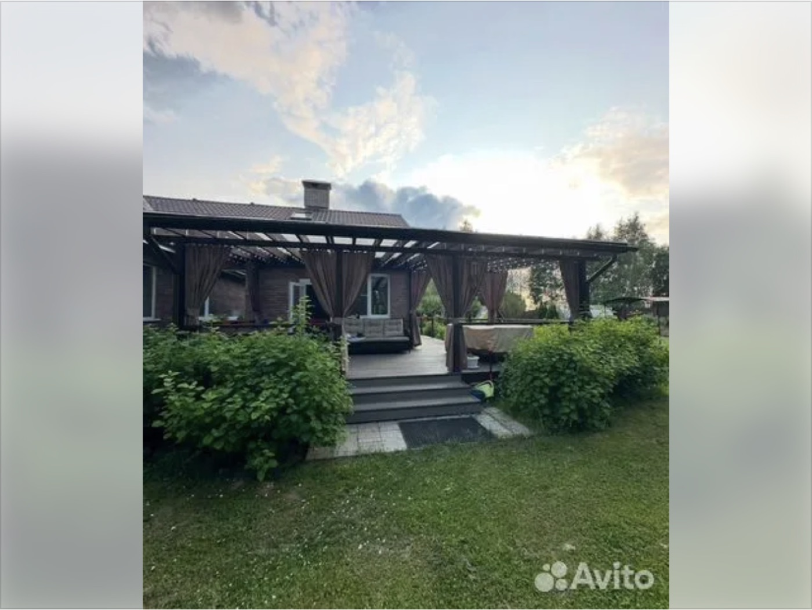
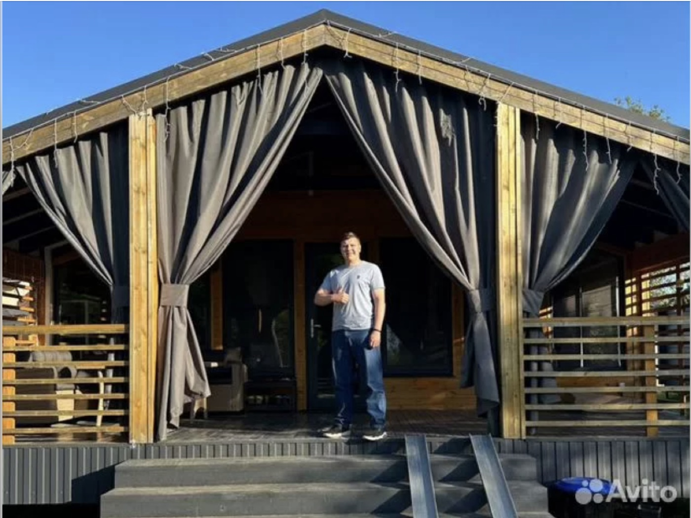
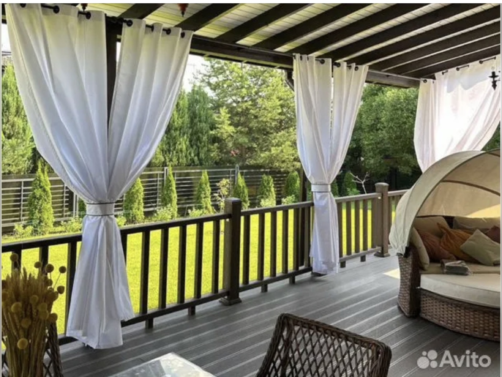
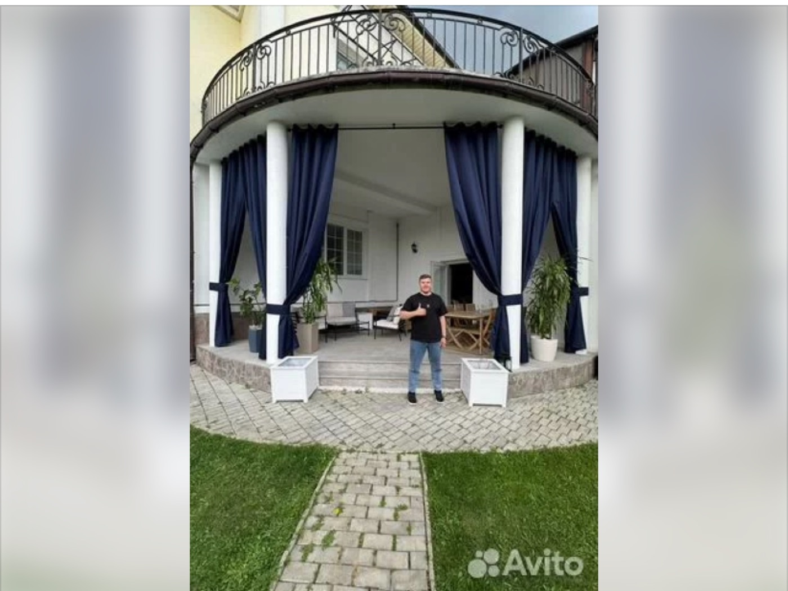

Уличные шторы и тенты, которые выдерживают дождь и не снимаются на зиму. Дизайнерские шторы, покрывала и абажуры для интерьера — по вашим меркам и тканям. Один звонок — обе истории.
Вадим — уличный текстиль · +7 910 848-12-07 · отвечает за несколько часов
«Уличная гармония» — семейная история: Вадим отвечает за улицу, Светлана — за дом. Работаем вместе больше 10 лет, каждый — в своей стихии.
Пошив и монтаж штор, тентов-крыш и чехлов для беседок, террас, качелей и кафе. Выезд на замер, установка в тот же выезд, 10+ лет в сфере, работа по договору. 5.0 и 11 отзывов на Авито.
Профиль на Авито — 5.0, 11 отзывов ↗Дизайнер-декоратор по тканям: шторы, покрывала, абажуры и подушки на заказ — из дизайнерских тканей британских домов Harlequin, Clarke & Clarke, Beaumont. Подбор ткани под уже готовый интерьер или с нуля.
Телеграм-канал с проектами ↗Для беседок, террас и веранд. Всесезонные ткани — можно не снимать на зиму.
Для беседок, качелей и летних кафе. Каркас, раскрой и монтаж под ключ.
Для уличной мебели и качелей — защита от дождя и солнца по размеру.
Классические и римские, из дизайнерских тканей — под готовый интерьер.
В тон шторам или отдельным акцентом — по вашим тканям или из каталога.
Нестандартные размеры и форма, без видимых каркасных рёбер и швов.
Фото с последних заказов — беседки и террасы в Москве и области.



«Очень довольна шторами для крытой террасы: специалисты опытные, корректные, настоящие профессионалы своего дела. Результат работы отлично видно на фото и выше всяких похвал.»
«Сделали в срок. Работа качественная. Швы на шторах ровные. Ткани добротные. Выбрал Оксфорд.»
«Очень довольна качеством и внешним видом тента. Искала именно всесезонный, чтоб не снимать на зиму. Всё выполнено в срок, монтаж — быстро и качественно.»
«Сделали всё очень быстро! От замера до монтажа — 3 дня. Ребята приехали вовремя, монтаж выполнили аккуратно, за собой убрали мусор. Качество отличное.»
Звонок или сообщение — расскажите, что нужно и покажите фото беседки, террасы или окна.
Выезжаем на объект по Москве и области, снимаем точные размеры, обсуждаем ткань и цвет.
Честная стоимость по факту размеров и выбранной ткани — без сюрпризов в конце. Работаем по договору.
Кроим и шьём под ваш объект — без типовых размеров и компромиссов по посадке.
Устанавливаем на месте и убираем за собой. Изделие с гарантией.
Выезжаем на замер по всему городу и области. Уже работали здесь:
Замер бесплатный. Отвечаем за несколько часов, на связи каждый день с 08:00 до 23:00.